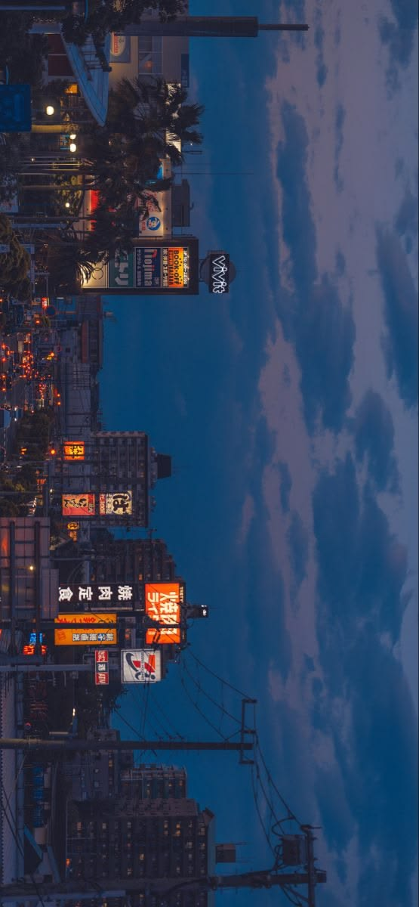

<div style="
  position: relative;
  width: 100%;
  max-width: 900px;
  height: 330px;
  border-radius: 18px;
  overflow: hidden;
  box-shadow: 0 20px 48px rgba(0, 0, 0, 0.5);
  border: 1px solid rgba(255, 255, 255, 0.12);
  display: flex;
  align-items: flex-end;
">
  <!-- Clean Background Artwork -->
  

  <!-- Subtle Bottom Gradient (Keeps image clear while boosting text legibility) -->
  <div style="
    position: absolute;
    inset: 0;
    background: linear-gradient(0deg, rgba(7, 10, 18, 0.9) 0%, rgba(7, 10, 18, 0.4) 45%, transparent 80%);
    z-index: 1;
  "></div>

  <!-- Right Side: Cybersecurity Japanese Vertical Accent Ribbon -->
  <div style="
    position: absolute;
    top: 24px;
    right: 28px;
    z-index: 2;
    display: flex;
    align-items: center;
    gap: 10px;
    writing-mode: vertical-rl;
    text-orientation: upright;
  ">
    <span style="
      font-family: 'Hiragino Mincho ProN', 'Yu Mincho', serif;
      font-size: 0.82rem;
      letter-spacing: 0.35em;
      color: rgba(255, 255, 255, 0.8);
      text-shadow: 0 2px 8px rgba(0, 0, 0, 0.9);
    ">
      情報防衛
    </span>
    <span style="
      width: 1px;
      height: 38px;
      background: linear-gradient(180deg, #e11d48, transparent);
      display: inline-block;
    "></span>
  </div>

  <!-- Bottom-Left Minimal Typography Lockup -->
  <div style="
    position: relative;
    z-index: 2;
    padding: 26px 32px;
    display: flex;
    flex-direction: column;
    gap: 6px;
  ">
    <!-- Top Meta Row: Crimson Hanko Seal + Katakana Transliteration -->
    <div style="
      display: flex;
      align-items: center;
      gap: 10px;
    ">
      <span style="
        font-family: 'Hiragino Kaku Gothic Pro', 'Meiryo', sans-serif;
        font-size: 0.65rem;
        font-weight: 700;
        color: #ffffff;
        background: #e11d48;
        padding: 2px 6px;
        border-radius: 3px;
        letter-spacing: 0.05em;
        box-shadow: 0 0 10px rgba(225, 29, 72, 0.6);
      ">
        開発者
      </span>
      <span style="
        font-family: 'Hiragino Mincho ProN', 'Yu Mincho', serif;
        font-size: 0.85rem;
        letter-spacing: 0.28em;
        color: #cbd5e1;
        text-shadow: 0 1px 4px rgba(0, 0, 0, 0.8);
      ">
        ヴェダンシュ・サクセナ
      </span>
    </div>
    <!-- Clean, Sharp Geometric Name -->
    <h1 style="
      margin: 0;
      font-family: 'Space Grotesk', -apple-system, BlinkMacSystemFont, 'Segoe UI', Roboto, sans-serif;
      font-size: clamp(2rem, 4.5vw, 2.9rem);
      font-weight: 800;
      color: #ffffff;
      letter-spacing: 0.14em;
      text-transform: uppercase;
      line-height: 1.05;
      text-shadow: 0 3px 12px rgba(0, 0, 0, 0.9);
    ">
      VEDANSH SAXENA
    </h1>
    <!-- Sanskrit Shloka + Japanese Proverb + CSE Diligence Quote -->
    <div style="
      display: flex;
      flex-wrap: wrap;
      align-items: center;
      gap: 8px;
      margin-top: 2px;
    ">
      <!-- Sanskrit Shloka: Effort and Action Lead to Success -->
      <span style="
        font-family: 'Noto Sans Devanagari', 'Sanskrit Text', sans-serif;
        font-size: clamp(0.75rem, 1.4vw, 0.85rem);
        font-weight: 500;
        color: #f1f5f9;
        letter-spacing: 0.03em;
        text-shadow: 0 2px 6px rgba(0, 0, 0, 0.9);
      ">
        उद्यमेन हि सिध्यन्ति कार्याणि
      </span>
      <!-- Divider Dot -->
      <span style="color: #e11d48; font-size: 0.8rem;">•</span>
      <!-- Japanese Engineering Diligence Quote -->
      <span style="
        font-family: 'JetBrains Mono', 'Fira Code', monospace;
        font-size: clamp(0.7rem, 1.2vw, 0.78rem);
        color: #94a3b8;
        letter-spacing: 0.04em;
        text-shadow: 0 2px 6px rgba(0, 0, 0, 0.9);
      ">
        “七転び八起き” // Fall seven times, stand up eight — built from first principles.
      </span>
    </div>
  </div>
</div>